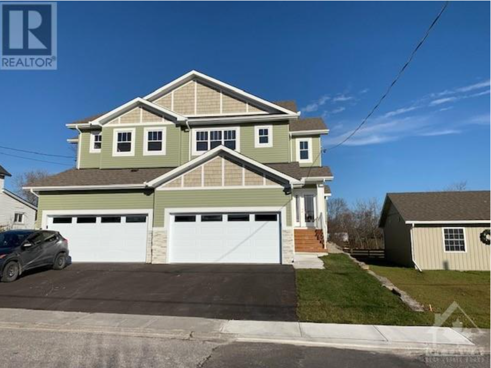

65 Millburn Cresc.

In artisan town of Almonte, Victorian three-storey brick home on 1/2 acre lot with mature trees and perennial gardens. This 3bed, 2bath century home has historical charm, modern comforts and - a third storey loft. Enjoy the gracious gabled veranda. Then, step inside to beautifully cared for original wooden staircase, softwood floors, wide baseboards, crown moulding, high ceilings and back staircase. Click the photo to see the full listing
172 Hillside Dr.

Exceptionally well maintained storey and a half home on a quiet St. in the sought after Village of Pakenham. 2 + 1 bdrms (bdrm on main flr being used as a den) 2 full baths, detached 2 car garage, paved driveway. Main floor features a spacious lvg rm with fireplace, separate dining area, kitchen, den, 3 pc bath, laundry and fmly rm with fireplace overlooking rear yard. Click the photo to see the full listing
2142 Mildew Lane.

Immediate occupancy available. Celebrate Christmas in your new home! Quality built, Tarion warranty, 2-storey semi-detached home at an affordable price. This turnkey home is available now - featuring a beautiful Deslaurier custom kitchen with quartz countertop & tiled backsplash; hardwood maple flooring on the main floor, feature wall with a gas fireplace in the living room. Click the photo to see the full listing